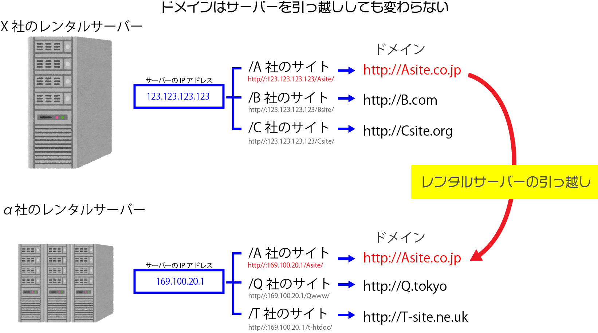

サーバーの知識 - web総合概論
category: web総合概論
コンピューターネットワークにおけるサーバークライアント型ネットワークについて
コンピューターとコンピューターをつなぎデータの送信と受信の機能を付加し通信できるようにした状態をコンピューター通信といいます。
コンピューター通信におけるコンピューターネットワーク（ネット）の種類と抑えておくべき用語を確認しましょう。
コンピューター通信
ネットワークの規模
LAN は ローカルネットワーク 対して WANはワイドエリアネットウェアーク
イントラネット ・・・ 企業や団体など分散した組織の中だけで使うコンピューターネットワーク
インターネット
ネットワーク同士がつながった大きなネットワークで地球規模で通信できます。
ネットワークの種類
ピア トゥ ピア
各々のPCがデータのやり取りを同時に実行して全てのPCがノードとして平等に機能します。
一般的に社内や家庭でルーター経由でフォルダーを共有することができます、
管理することが簡単ですがノードが増えることによる負荷を管理できないことが多くタスクが一か所に集中するとネットワークが機能しない場合があります。
サーバー クライアント型ネットワーク
情報を保管しリクエストに応じて情報を送信する。情報閲覧専用の役割をもっているPCをサーバー（コンピューター）とよび
クライアント側はサーバー側に データー閲覧を依頼する(ブラウザーやUA)ローカルサイドのPCやスマートフォン端末のことをいいます。
TCP/IP
インターネットの情報（データ）のやりとりの標準化について説明します。
- TCP
- Transmission Control Protocol
- IP
- Internet Protocol
[インターネットの技術 | フロアガイド | NTT技術史料館]
ロケーションをユニーク化することで端末を間違えなく送信することができます。電話番号のような番号で端末のロケーションを判別しています。ロケーションの判別をIPアドレスと呼びます。
インフラには標準化が必要。
標準化 : 機能や用途 仕様の統一化 一般化 （不足過剰をなくすこと）規格化
「日本の電気のコンセントは交流で100Vの電圧です。
道路交通法では左側通行。
歩行者と車両にわかれ車道には車両が通行し、歩道には歩行者が通行します。」
などのようにインターネットで情報をやり取りするときの規格があります。
IPアドレス
IPv4
従来のインターネットの端末場所を判別する番号
例) IPv4 : 172 16 5 151
0 - 255 まで４つの数字の羅列で識別します。
基本的なインターネット上のやり取りでこのIPv4形式がつかわれる。
番号で地域などやネットワーク接続会社などがわかる。
IPアドレスからプロバイダーを調べることができます。
IPv6
インターネット枯渇問題とネットワーク機器の多様化
IPv4ではインターネット接続機器の増加に追いつかず番号の枯渇問題が過去ありました。
多くの機器をインターネットでつなぐためIPv6が規格されました。ユニークな番号は340*1036(340澗)個あります。
例として
IPv6 : fe80::1031:f572:3eb0:f67e
ローカルIP/グローバルIP
IPアドレスが足らないので各々のネットワーク会社
おもにプロバイダーは利用者にはローカルIPでやり取りする。
サブネットマスク
ローカルIP アドレスの範囲 ローカルで接続できる端末（ノード）の数がわかる
インターネット（接続会社）
インターネットプロバイダー（Internet Service Provider）
インターネットに接続するサービス。（固有のIPアドレスを所有しておりたんまつに接続する権利を与えるサービス。）
ここまではグローバルIPで識別されています。
ローカルIPはIPアドレスの枯渇問題を解決するために 局所で使われるノードには局所で使うローカル番号を与えて端末識別をおこなっています。
ルーター機器はルーティング（道案内）をするための機器です。
-
プロバイダー -
「ゲートウェイルーター」 -
「ハブ（スイッチングハブ）」 -
「ネットワークカードとPCなど」
例えば無線ランを拾えないかったり、特殊な回線やデータ送受信量を強化したいときは 別でデバイスを買うこともある
ドメイン
日本のドメイン管理法人 日本ネットワークインフォメーションセンター
ドメインの役割
IPアドレスは機器の番号でありますが webページやサイトのオーナーは同じ端末に共存することはあります。IPアドレスという数字での表記は人にとって使いづらい。
現在では運営会社の明確化やブランドイメージの固定化を目的に取得する意味合いの方が強い

サーバーを移転してIPアドレスが変わってもサイトのドメインオーナーはドメイン名を変更しなくて済む
googleのドメイン
https://google.com
ドメインの取得は管理料を払い続ければ抑えることができる。
逆に管理料が払えなければ失効する。
サブドメイン
独自ドメインがない場合 レンタルサーバーのドメインの直下に個別の名前を入れて運用する。
ドメイン取得会社
サーバーの役割
WebサイトとWebサーバー
OS：Unix/Linax OS が多い 一部windowsサーバー
ネットワークサーバーようの筐体であることがおおい。
インターネットサーバープログラム ： Apache
データベースサーバー
データの保管庫
ドメインネームサーバー
ドメイン名とサーバーを記録してユーザーが閲覧したいページを提供する交通整理をするサーバー ここにドメイン名が登録されていないとクライアントにページが送信されない。
レンタルサーバーが取り扱っているWebページにドメイン名を登録することでWebページを送信してくれる。
（レンタルサーバーを引っ越しするときに必要な知識）
FTPサーバー
FTP機能（ファイルトランスファープロトコル） 製作者がファイルをサーバーにアップロードしたり消したりするときに便利なソフトです。おもにwebサイト製作者に必要です。
SSHサーバー
FTP転送をセキュア化（暗号化）する。
[SSH]
サーバーを借りる
自宅にサーバー用のPCと回線を引いて自宅から世界に情報を提供することもできますが・（リアルプライベートサーバー）
ほとんどの場合はレンタルサーバーサービスにスペースを借りてサーバーに付属する機能を利用してwebページを配信するのがローコストな手法です。
VPS (バーチャルプライぺートサーバー)
ハード面を利用しソフトは全て自己責任で設定するサーバー